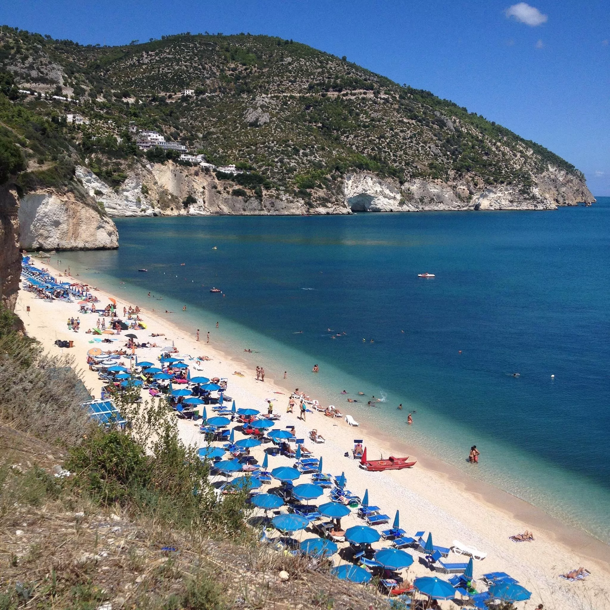
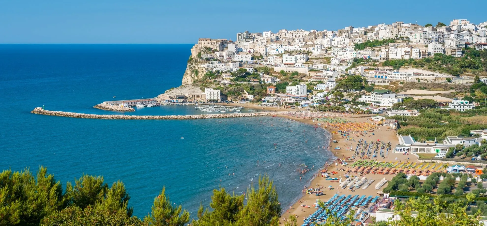
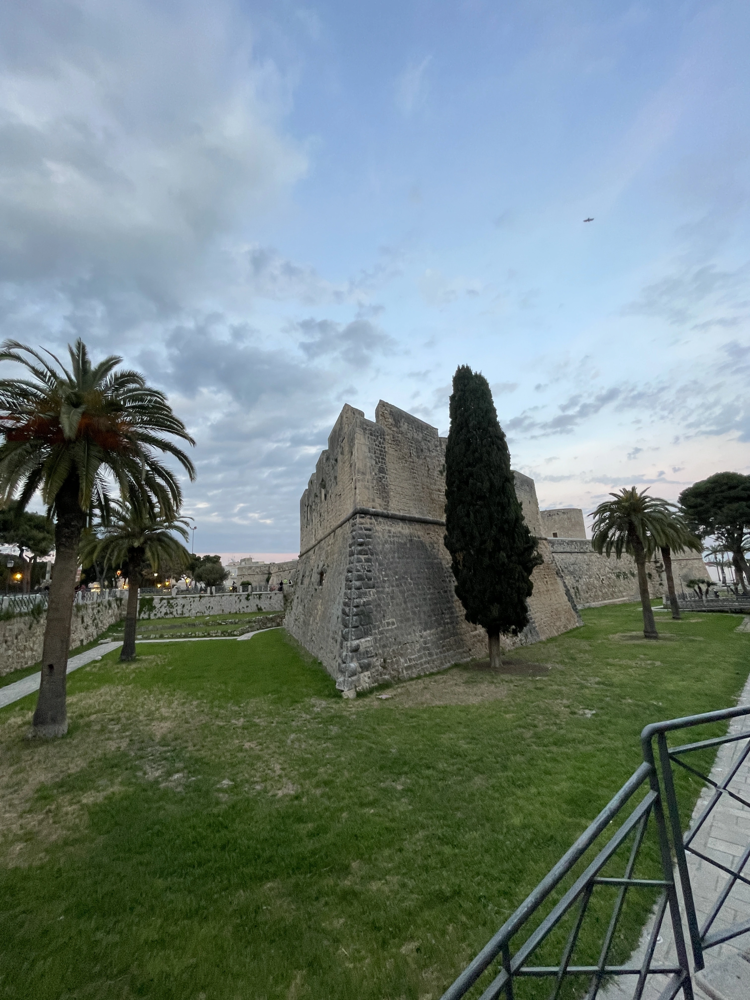
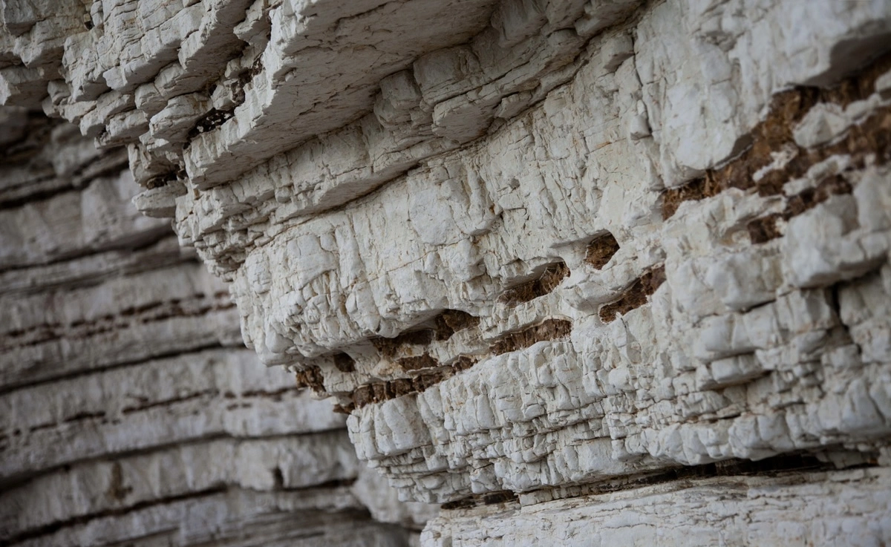

Strände bei Manfredonia: Baden im Gargano
Von Acqua di Cristo bis Vignanotica, über Mattinata und Mattinatella. Freie Strände, organisierte Strandbäder, Parkplätze und praktische Tipps für jeden Urlaubstyp.
WeiterlesenGeschichten, Orte und Aromen aus dem Land zwischen Meer und Bergen. Reiseführer von Menschen, die hier leben.

Von Acqua di Cristo bis Vignanotica, über Mattinata und Mattinatella. Freie Strände, organisierte Strandbäder, Parkplätze und praktische Tipps für jeden Urlaubstyp.
Weiterlesen
Das Schloss, der Fischmarkt, die Strände von Mattinata, Monte Sant'Angelo und die Tresoldi-Basilika. Ein Reiseplan von Menschen, die hier leben.
Weiterlesen


Quando i turisti se ne vanno, il Gargano si rivela. Spiagge deserte, tramonti senza filtro, e quel silenzio che è impossibile trovare d'estate.
Weiterlesen
Un pellegrinaggio laico tra vicoli di pietra bianca, il Santuario di San Michele e i panzerotti più buoni della Puglia.
Weiterlesen
L'installazione di Edoardo Tresoldi sulla basilica paleocristiana è un dialogo tra passato e presente che toglie il fiato. A pochi minuti da casa nostra.
Weiterlesen
Dalla ciambotta ai panzerotti, dal caciocavallo podolico al pane di Monte Sant'Angelo. Una guida golosa per chi vuole mangiare come un locale.
Weiterlesen
Sette giorni tra mare, borghi, foreste e sapori. Da Vieste a Peschici, dalla Foresta Umbra a Mattinata, tutto partendo da casa nostra.
Weiterlesen
Vicoli bianchi che scendono a picco sul mare, la Punta di San Francesco, il Pizzomunno e le grotte marine. Vieste è una di quelle mete che si vogliono tenere segrete.
Weiterlesen
Calette nascoste, acque trasparenti e rocce bianche di calcare. Una guida per chi vuole trovare il mare del Gargano lontano dagli ombrelloni.
Weiterlesen
Svegliarsi tardi, fare colazione sul balcone, perdersi nel centro storico, mangiare pesce fresco al porto. Cos'è una vera vacanza a Manfredonia.
Weiterlesen
Tre trattorie senza insegna, un panificio che apre alle 5 del mattino e un bar dove i pescatori fanno colazione alle 6. I posti che Francesco frequenta da trent'anni.
Weiterlesen
Non Vieste, non Peschici. Tre borghi nell'entroterra dove il tempo si è fermato, i vecchi giocano a carte davanti alla chiesa e la pasta viene ancora fatta a mano ogni mattina.
Weiterlesen
Quando partire per evitare il traffico della Foresta Umbra. A che ora arrivare alle spiagge più belle. Quali strade secondarie usare. Tutto quello che sappiamo dopo trent'anni vissuti qui.
Weiterlesen
Die Bruderschaften in Prozession, die Mysterien auf den Schultern getragen, der Karfreitagsritus, der seit Jahrhunderten wiederholt wird. Eine lebendige Tradition, die nur wenige Touristen erleben dürfen.
Weiterlesen
Baia delle Zagare, die Buchten von Mattinata, die nur zu Fuß erreichbaren Einbuchtungen. Die Orte, wo Einheimische ins Wasser springen, wenn das Meer schon perfekt und die Strände noch leer sind.
Weiterlesen
Ein Ausflug durch die Weinberge des Hinterlandes, handwerkliche Produzenten, die noch in kleinen Mengen keltern, und die richtigen Kombinationen mit der lokalen Küche. Gargano im Glas.
Weiterlesen
Tagsüber ist es ein Bauerndorf mit weiß gekalkten Häusern. Abends werden seine Buchten zu den schönsten im Gargano. Mattinata ist noch ein Geheimnis, und wir erzählen es euch.
Weiterlesen
La lista vera, senza filtri, di chi ci vive tutto l'anno.
WeiterlesenAcqua di Cristo, le calette di Mattinata, Vignanotica, Baia di San Felice. Un viaggio lungo tutta la costa garganica.
Weiterlesen
Hin- und Rückfahrt mit der Fähre ab 30 Euro, Meereshöhlen, das Haus von Lucio Dalla und ein Archipel, der wie eine andere Welt wirkt. Ab Juli starten die Boote vom Hafen Manfredonia.
Mehr lesen
10.000 Hektar Buchen und Eichen seit der Eiszeit, halbwilde Damhirsche auf Lichtungen, E-Bikes zum Ausleihen und absolute Stille eine Stunde von Manfredonia entfernt.
Mehr lesen
Sabato: Manfredonia, Siponto e la spiaggia. Domenica: Monte Sant'Angelo e Foresta Umbra, oppure Vieste. Itinerario pratico per chi ha solo un weekend.
Leggi tuttoCasa e Bottega liegt 300 m vom Meer entfernt, im historischen Zentrum von Manfredonia. Direkt buchen und 20 % gegenüber Booking und Airbnb sparen.
Verfügbarkeit prüfen →